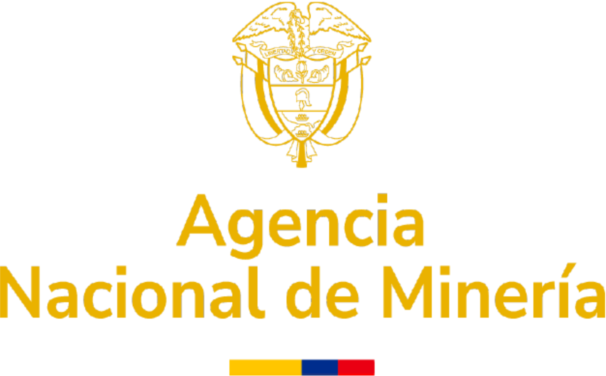
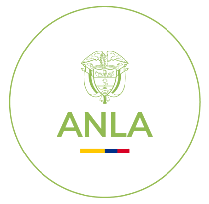
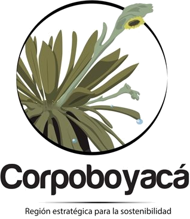
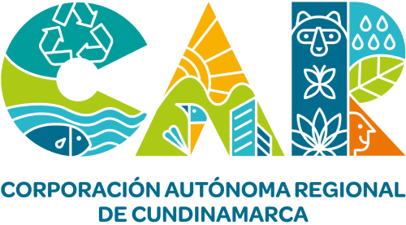
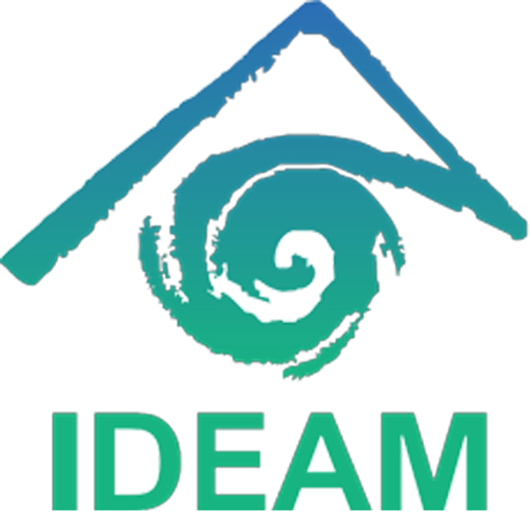
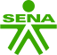
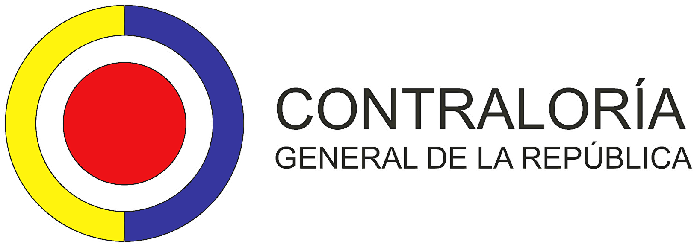

La capacidad instalada de Stratum Group le permite ofrecer los siguientes servicios de Ingeniería Especializada.
En Stratum Group gestionamos todos los aspectos técnicos, operativos y regulatorios de su concesión minera, desde el diseño inicial hasta el cierre y abandono, garantizando viabilidad técnica, optimización de costos y total alineación con el Código de Minas y la ANM.
Combinamos ciencia geológica, geofísica avanzada y tecnologías aerofotogramétricas para caracterizar el subsuelo, determinar la estabilidad del terreno y estructurar modelos predictivos tridimensionales de alta fidelidad.
Garantizamos el desarrollo ambientalmente responsable y jurídicamente blindado de sus proyectos mineros e industriales, gestionando instrumentos ante ANLA y las Corporaciones Autónomas Regionales (CAR) con defensa legal experta.
Protegemos la vida y la salud de sus trabajadores mediante sistemas de gestión robustos, planes de emergencia de alta operatividad, control de riesgos mineros e integración de herramientas digitales para inspecciones y reportes.
Soluciones digitales para una minería más eficiente, segura e inteligente. Integramos ingeniería minera, desarrollo de software full-stack, inteligencia artificial y transformación digital para diseñar soluciones tecnológicas adaptadas a las necesidades reales de las operaciones.

Trámites de títulos, elaboración y radicación de PTO, FBM, FRI, atención a visitas técnicas y fiscalización oficial.

Licencias ambientales, Estudios de Impacto Ambiental (EIA), Diagnóstico de Alternativas, Informes ICA y seguimiento ambiental.

Permisos y concesiones de aguas, vertimientos, emisiones atmosféricas, aprovechamiento forestal y control ambiental en Boyacá.

Trámites ambientales en Cundinamarca, concesiones de aguas, permisos de vertimientos, emisiones y atención de requerimientos.
Alineación técnica con políticas ambientales nacionales, normatividad de desarrollo sostenible y reportes sectoriales.

Reportes hidroclimatológicos, balances hídricos, registro en el SIRH y trámites de información técnica e hidrológica.

Capacitaciones especializadas, programas de formación en seguridad y rescate minero, y certificación de competencias laborales.

Acompañamiento técnico en auditorías fiscales, liquidación y soporte de regalías, planes de mejoramiento y hallazgos.
Informes periciales técnicos, soporte jurídico-minero, peritajes en incidentes y atención a requerimientos judiciales.
Trámites de títulos, elaboración y radicación de PTO, FBM, FRI, atención a visitas técnicas y fiscalización oficial.
Licencias ambientales, Estudios de Impacto Ambiental (EIA), Diagnóstico de Alternativas, Informes ICA y seguimiento ambiental.
Permisos y concesiones de aguas, vertimientos, emisiones atmosféricas, aprovechamiento forestal y control ambiental en Boyacá.
Trámites ambientales en Cundinamarca, concesiones de aguas, permisos de vertimientos, emisiones y atención de requerimientos.
Alineación técnica con políticas ambientales nacionales, normatividad de desarrollo sostenible y reportes sectoriales.
Reportes hidroclimatológicos, balances hídricos, registro en el SIRH y trámites de información técnica e hidrológica.
Capacitaciones especializadas, programas de formación en seguridad y rescate minero, y certificación de competencias laborales.
Acompañamiento técnico en auditorías fiscales, liquidación y soporte de regalías, planes de mejoramiento y hallazgos.
Informes periciales técnicos, soporte jurídico-minero, peritajes en incidentes y atención a requerimientos judiciales.
* Nota de Transparencia Regulatoria: Los nombres, siglas y logotipos de las entidades públicas y gubernamentales (ANM, ANLA, Corpoboyacá, CAR, MinTrabajo, MinMinas, SGC, Contraloría y Fiscalía) son marcas y símbolos propiedad exclusiva de sus respectivos titulares. Su mención en este portal web se realiza con fines estrictamente informativos y descriptivos para señalar el campo regulatorio y administrativo en el cual Stratum Group S.A.S. brinda asesoría, consultoría técnica y gestión especializada a favor de sus clientes titulares de proyectos.
Nuestro compromiso es tu tranquilidad y éxito operativo, respaldado por años de experiencia.
Equipo altamente calificado integrado por Ingenieros de Minas, Geólogos, Especialistas Regulatorios y Desarrolladores de Software e Inteligencia Artificial.
Garantía de alineación técnica con las exigencias del Código de Minas, la ANM, Ministerio de Trabajo y autoridades ambientales (CAR / ANLA).
Proyectos diseñados para maximizar el rendimiento de la inversión, reducir costos de extracción y minimizar riesgos operativos mediante tecnología de punta.
Ya sea para cumplir con la Agencia Nacional de Minería, tramitar una licencia ambiental, implementar el SG-SST o digitalizar sus procesos con software a la medida e IA, nuestro equipo está listo para asesorarlo.